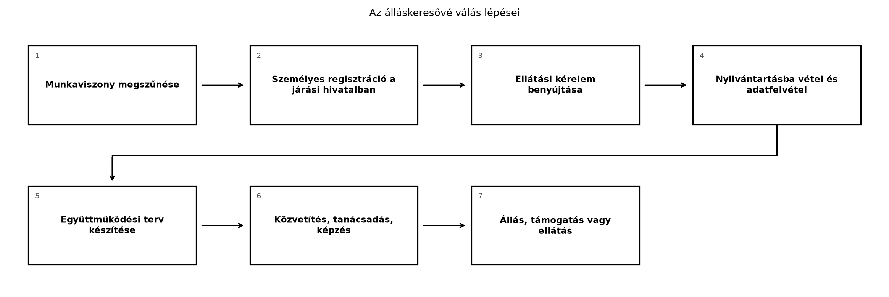

Elképzelhető, hogy a szakmai vizsga után nem vár azonnal munkahely, vagy egy későbbi életszakaszban a munkáltató megszünteti az állásodat. Ilyenkor nem a pánik, hanem a munkaügyi rendszer ismerete segít: tudnod kell, hová regisztrálj, milyen ellátást kérhetsz, milyen támogatásokkal találhatsz újra munkát, és milyen kötelezettségeid vannak. Egy asztalos számára a munkaerőpiaci szolgáltatások is fontosak: a pályakezdő tanácsadás, az ingyenes képzés vagy a vállalkozásindítási támogatás révén hamarabb visszakerülhetsz a szakmába vagy indíthatsz saját műhelyt.
Képzeld el, hogy egy fiatal asztalos tanuló befejezi a képzést, megkapja a bizonyítványát, de még nem talált munkát. A járási hivatal foglalkoztatási osztályán ügyintézőhöz kerül, aki adatlapot tölt ki vele, ellátási kérelmet vesz fel, és ismerteti a lehetőségeket: regisztrálják álláskeresőként, időpontot adnak tanácsadásra, és felajánlják a nyitott álláshelyeket. A folyamat nem bürokratikus akadály, hanem segítség: az ügyintéző és a tanácsadó abban érdekelt, hogy minél hamarabb megfelelő munkahelyet találj.
Definíció. Álláskereső az a munkavállaló, aki nincs munkaviszonyban, de szeretne dolgozni, és nyilvántartásba veteti magát a munkaügyi szervezetnél. A nyilvántartásba vétel nem egyenlő az ellátás megállapításával; előfeltétele az álláskeresési ellátások és a munkaerőpiaci szolgáltatások igénybevételének.
Definíció. Aktív eszközök azok a munkaerőpiaci eszközök, amelyek a foglalkoztatást segítik elő: képzés, tanácsadás, bér- és mobilitási támogatás, önfoglalkoztatás támogatása, közfoglalkoztatás. Passzív eszközök a pénzbeli ellátások: álláskeresési járadék, nyugdíj előtti segély, foglalkoztatást helyettesítő támogatás, utazási költségtérítés.
Szabály. A passzív eszközök arra valók, hogy az álláskereső időszakban anyagi biztonságot adjanak, de nem céljuk a munkahely helyettesítése hosszú távon. Az aktív eszközök arra valók, hogy az érintett gyorsabban találjon munkát vagy váljon önálló vállalkozóvá.
Jogszabály. A foglalkoztatás elősegítéséről és a munkanélküliek ellátásáról szóló törvény (a hatályos jogszabály pontos száma és címe ellenőrizendő) szabályozza az álláskeresővé válást, az álláskeresési ellátásokat, az aktív eszközöket és a munkaügyi szervezet működését. A foglalkoztatást helyettesítő támogatás a szociális igazgatásról és szociális ellátásokról szóló törvény (a hatályos szabály ellenőrizendő) szerint járhat, ezért más eljárásban kell igényelni. A pontos feltételeket, összegeket, határidőket mindig a hatályos jogszabály és az ügyintéző tájékoztatása alapján kell ellenőrizni.

A folyamat lépései:
Definíció. Együttműködési kötelezettség az álláskereső azon kötelezettsége, hogy a munkaügyi szervezettel rendszeresen együttműködjön: megjelenjen a megbeszélt időpontokban, elfogadja a felajánlott, megfelelő állást vagy képzést, és bejelentse, ha a körülményei megváltoznak (például betegség, költözés, munkavállalás).
Az álláskeresőnek jogai vannak: - ingyenes munkaerőpiaci szolgáltatások igénybevétele, - tájékoztatás a jogokról, kötelezettségekről, ellátásokról, - közvetítés a nyilvántartott álláshelyekre, - kérelemre ellátás, ha a feltételek fennállnak, - panasz és jogorvoslat lehetősége.
Kötelezettségei: - a nyilvántartásba vételhez szükséges adatok valós bejelentése, - a megbeszélt időpontokban való megjelenés, - a felajánlott, megfelelő állás elfogadása, - részvétel a kijelölt tanácsadáson vagy képzésben, - a körülmények változásának bejelentése.
Szabály. Ha az álláskereső a kötelezettségeit megszegi, a munkaügyi szervezet szankciót alkalmazhat: az ellátás folyósítása szünetel (például a megjelenés elmulasztása esetén), súlyosabb esetben az ellátást megvonják vagy az álláskeresőt törlik a nyilvántartásból. A pontos szankciókat a hatályos jogszabály határozza meg (ellenőrizendő). A szankciók nem célok, hanem a szabályos együttműködés keretei.
Álláskeresési járadék. Azok kaphatják, akik az álláskeresővé válásukat megelőző időszakban elegendő munkaviszonnyal rendelkeznek, és nem saját hibájukból veszítették el a munkájukat. A járadék alapja a korábbi átlagkereset, a járadék mértékét és időtartamát a törvény százalékban és napokban határozza meg (ellenőrizendő: aktuális mérték és maximális időtartam). A járadék folyósítása alatt az álláskeresőnek együttműködési kötelezettsége van, és rendszeresen jelentkeznie kell.
Nyugdíj előtti segély. Azok az álláskeresők kaphatják, akik a nyugdíjkorhatáruk előtt állnak, hosszabb munkaviszonnyal rendelkeznek, és a járadékra való jogosultságukat kimerítették vagy nem jogosultak rá. A segély az öregségi nyugdíj megállapításáig adhat biztos anyagi hátteret, feltételei szigorúak (ellenőrizendő).
Utazási költségtérítés. A munkaügyi szervezet által kiközvetített állásinterjúra, alkalmassági vizsgálatra utazó álláskeresőnek – igénybejelentés alapján – a jegyzőkönyvben rögzített költség megtéríthető (ellenőrizendő). Ez a támogatás segíti a mobilitást: egy távolabbi asztalosműhely állásinterjújára is el lehet jutni anélkül, hogy a költség visszatartaná az álláskeresőt.
Foglalkoztatást helyettesítő támogatás (FHT). Azok az aktív korú, nem foglalkoztatott személyek kaphatják, akik nem jogosultak álláskeresési járadékra, de szociálisan rászorultak. A támogatás feltételeit a szociális törvény határozza meg, igénylése a járási hivatal szociális osztályán történik (ellenőrizendő). Az FHT mellett az önkormányzat együttműködési programban való részvételt írhat elő.
Szabály. A passzív ellátások nem automatikusan járnak; mindegyikhez kérelem kell, és a jogosultsági feltételeket igazolni kell. Aki a kérelmet késve nyújtja be, eleshet az ellátástól vagy annak egy részétől.
Definíció. Közfoglalkoztatás a helyi önkormányzatok, állami szervek vagy közfeladatot ellátó szervezetek által szervezett, átmeneti, határozott idejű munkaviszony, amelynek célja a tartósan álláskeresők foglalkoztatása és a közfeladatok ellátása. A közfoglalkoztatott bért kap, munkaviszonyban áll, és a foglalkoztatás ideje alatt társadalombiztosítási ellátásra is jogosult.
A közfoglalkoztatás célcsoportja elsősorban az, aki a nyílt munkaerőpiacon nehezen helyezkedik el, például tartósan álláskereső, alacsony iskolai végzettségű vagy megváltozott munkaképességű. A közfoglalkoztatottak bérét külön kormányrendelet határozza meg (közfoglalkoztatási bér, közfoglalkoztatási garantált bér); ez alacsonyabb a minimálbérnél (ellenőrizendő: hatályos összeg). A közfoglalkoztatás eszköz a visszavezetéshez: képzéssel, munkatapasztalattal segítheti a nyílt munkaerőpiacra való visszatérést, de nem helyettesíti az elsődleges munkaerőpiaci állást.
Definíció. A munkaügyi szervezet (Nemzeti Foglalkoztatási Szolgálat, NFSZ – az aktuális intézménynév ellenőrizendő) az állami foglalkoztatási szolgálat, amelynek feladata a munkaerőpiaci szolgáltatások, az állásközvetítés, a munkaerőpiaci programok és az ellátások szervezése. Felépítése háromszintű: országos központ, kormányhivatali (megyei/fővárosi) szint és járási hivatalok foglalkoztatási osztályai. A járási hivatalnál történik a regisztráció, az ügyintézés és a szolgáltatások igénybevétele.
A járási hivatal foglalkoztatási osztályán elérhető munkaerőpiaci szolgáltatások:
A szolgáltatások ingyenesek. A pontos elnevezések és elérhetőség hivatalonként eltérhet, ezért az aktuális intézményrendszert mindig az NFSZ honlapján vagy a járási hivatalban kell ellenőrizni (ellenőrizendő).
Az aktív eszközök a foglalkoztatás elősegítését szolgálják. A legfontosabbak:
Szabály. Az aktív eszközök igénybevételéhez általában az álláskeresői nyilvántartásban kell szerepelni, és a támogatást kérelemre, a feltételek teljesülése esetén, a munkaügyi szervezet döntése alapján lehet kapni (ellenőrizendő: aktuális feltételek).
Az önfoglalkoztatás támogatása akkor jöhet szóba, ha az álláskereső saját asztalosműhelyt, egyéni vállalkozást vagy céget szeretne indítani. A támogatás feltétele általában: üzleti terv benyújtása, a vállalkozói ismeretek igazolása, a tevékenység megkezdése és a támogatás elszámolása. A támogatás összege és formája a hatályos jogszabálytól függ (ellenőrizendő). A vállalkozásindítás részletes szabályait a Vállalkozásműködtetés főfejezet tárgyalja.
Egy pályakezdő asztalos, nevezzük Bencének, a vizsga után két hónapig halogatta a regisztrációt, mert úgy gondolta, „úgyis talál munkát”. Közben elfogyott a megtakarítása, és csak később jelentkezett a járási hivatalban. Az ügyintéző tájékoztatta, hogy pályakezdőként előzetes munkaviszony nélkül járadékra nem jogosult (ellenőrizendő, hogy a képzés alatti szakképzési munkaszerződés jogosultsági időnek számít-e), de a késői regisztráció miatt két hónapig kimaradt a tanácsadásból, a támogatott képzésből és a pályakezdőknek szóló bértámogatott állásokból. Bence ezt követően részt vett álláskeresési tanácsadáson, képzésre jelentkezett, és egy kis asztalosműhelyben helyezkedett el. A tanulság: a munkaügyi rendszer nem vár, az első lépés a regisztráció.
A megoldásokat a Megoldások elején találod.
1. feladat (A) Magyarázd meg saját szavaiddal, mit jelent az álláskeresővé válás, és miért fontos a nyilvántartásba vétel.
2. feladat (A) Sorold fel a passzív eszközöket, és mindegyiknél írd le egy mondatban, kinek szól.
3. feladat (B) Egy álláskereső munkaviszonya megszűnt, de nem jelentkezik azonnal a járási hivatalban. Milyen következményei lehetnek ennek? Gondold végig az ellátás és a szolgáltatások szempontjából.
4. feladat (B) Tervezd meg egy asztalos pályakezdő álláskereső első hetét: milyen lépéseket tesz a regisztrációtól az első tanácsadásig? Készíts listát.
5. feladat (C) Melyik aktív eszközt javasolnád annak az álláskeresőnek, aki saját asztalosműhelyt szeretne indítani? Indokold választásodat, és írd le, milyen feltételekkel igényelheti (tájékoztató jelleggel, ellenőrizendő feltételekkel).
6. feladat (D) Képzeld el, hogy álláskereső vagy, és a járási hivatal egy asztalosműhely állásinterjújára közvetít ki, amely 60 km-re van a lakóhelyedtől. Milyen támogatást kérhetsz az utazási költség megtérítésére? Írd le, mit tennél az interjú előtt és után.
Önellenőrzés – válaszok
1. feladat megoldása (A)
Álláskeresővé válás azt jelenti, hogy a személy munkát szeretne
vállalni, de nincs munkaviszonya, ezért a munkaügyi szervezetnél
nyilvántartásba veteti magát. A nyilvántartásba vétel azért fontos, mert
ez a feltétele az álláskeresési ellátások és a munkaerőpiaci
szolgáltatások igénybevételének.
2. feladat megoldása (A)
- Álláskeresési járadék: azoknak, akik megszűnt munkaviszonnyal
rendelkeznek és elegendő munkaviszonyt szereztek. - Nyugdíj előtti
segély: a nyugdíjkorhatár előtt álló, hosszabb munkaviszonnyal
rendelkező álláskeresőknek. - Utazási költségtérítés: a közvetített
állásinterjúra utazó álláskeresőknek. - Foglalkoztatást helyettesítő
támogatás: azoknak, akik nem jogosultak járadékra, de szociálisan
rászorultak.
3. feladat megoldása (B)
Ha az álláskereső késlekedik a regisztrációval, eleshet az ellátásnak
attól a részétől, amelyet a regisztráció napjáig késve igényelt volna.
Nem fér hozzá a szolgáltatásokhoz, nincs állásközvetítés, tanácsadás, és
az együttműködési kötelezettség sem kezdődik el. A késedelem tehát
anyagi és esélybeli veszteséget is okoz.
4. feladat megoldása (B)
A pályakezdő asztalos első hetének terve: 1. Hétfő:
munkaviszony-igazolás és iskolai bizonyítványok összegyűjtése. 2. Kedd:
személyes regisztráció a járási hivatal foglalkoztatási osztályán,
szolgáltatási igény és (jogosultság esetén) ellátási kérelem benyújtása.
3. Szerda: együttműködési terv készítése a tanácsadóval. 4. Csütörtök:
részvétel álláskeresési tanácsadáson, önéletrajz készítése. 5. Péntek:
álláshirdetések átnézése a hivatal adatbázisában, jelentkezés.
5. feladat megoldása (C)
Az önfoglalkoztatás támogatását javasolnám. A feltétel általában üzleti
terv készítése, vállalkozói ismeretek megléte, a tevékenység megkezdése
és a támogatás elszámolása (ellenőrizendő: aktuális feltételek). A
támogatás segít a műhely eszközeinek beszerzésében, a kezdeti működési
költségek fedezésében.
6. feladat megoldása (D)
Az interjú előtt jelezném a kiközvetítést a járási hivatalban, és
megkérdezném az utazási költségtérítés igénylésének módját. Az interjú
után megtartanám a jegyeket vagy számlákat, és benyújtanám az igényt a
hivatalhoz. A cél az, hogy a távolság miatt ne maradjak el a
lehetőségtől.
Az álláskeresővé válás a munkaügyi szervezetnél történő nyilvántartásba vétellel kezdődik, amely feltétele az ellátásoknak és a szolgáltatásoknak. A passzív eszközök pénzbeli ellátások (álláskeresési járadék, nyugdíj előtti segély, utazási költségtérítés, foglalkoztatást helyettesítő támogatás), az aktív eszközök pedig a foglalkoztatást segítik (képzés, bértámogatás, mobilitási támogatás, önfoglalkoztatás, közfoglalkoztatás). Az álláskeresőnek együttműködési kötelezettsége van: megjelenés, felajánlott állás elfogadása, változások bejelentése. A munkaügyi szervezet szolgáltatásai ingyenesek: állásközvetítés, pályaorientáció, álláskeresési tanácsadás, álláskereső klub, pszichológiai tanácsadás. Továbbvitt eredmény. A munkaerőpiaci szolgáltatások, különösen a pályaorientáció és az álláskeresési tanácsadás, a pályakezdés során is hasznosíthatók; a könyv záró és vizsgafelkészítő részei erre építenek.
Felhasznált forrástípusok: a foglalkoztatás elősegítéséről és a munkanélküliek ellátásáról szóló törvény, a szociális törvény, a Nemzeti Foglalkoztatási Szolgálat hivatalos tájékoztatói (jogszabályok, intézményi honlap – ellenőrizendő). Ellenőrizendő pontok: a hatályos jogszabályok pontos száma és címe, az álláskeresési járadék és a foglalkoztatást helyettesítő támogatás aktuális feltételei, mértékei, időtartama; az NFSZ jelenlegi elnevezése és szervezeti felépítése; a munkaerőpiaci szolgáltatások pontos megnevezései és elérhetősége; az aktív eszközök aktuális feltételrendszere.